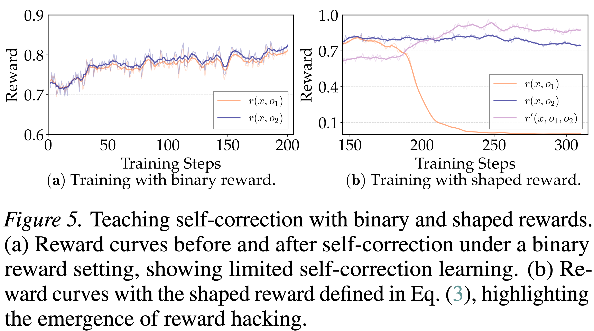

04 — Methodology
Training via Response-Masking
Decoupling self-correction from direct reasoning
Conflicts in RL Training Problem
Two Reward Designs
- Binary Reward: Only assigns reward based on final answer correctness
- Shaped Reward: Encourages positive self-correction:
- Incorrect → Correct: 1.0
- Correct → Correct: 0.75
- Incorrect → Incorrect: 0.0
- Correct → Incorrect: -0.25

Takeaway
Jointly optimizing self-correction and direct reasoning limits self-correction learning. Reward shaping alone fails to decouple these signals and instead induces reward hacking and mode collapse.
Two-Stage Training Solution
Stage I: Learning Self-Correction Only
- Treat pre-correction response $o_1$ as input
- Mask loss for all tokens in $o_1$
- Apply KL loss on $o_1$ to constrain distribution
Stage II: Co-evolving Both Capabilities
- Remove KL constraint
- Unmask $o_1$ only for consistent correctness samples
- Prevent gradient conflicts for inconsistent samples

Takeaway
Stage I isolates self-correction learning by treating $o_1$ as fixed context and updating the policy only from $o_2$. Stage II selectively unmasks $o_1$ when reward signals are non-conflicting, co-evolving both direct reasoning and self-correction.